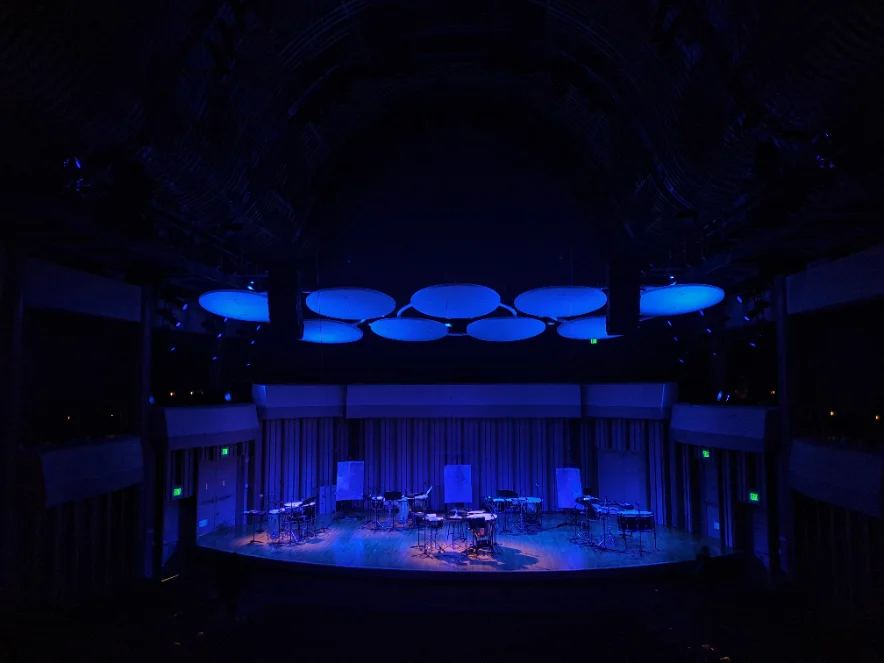
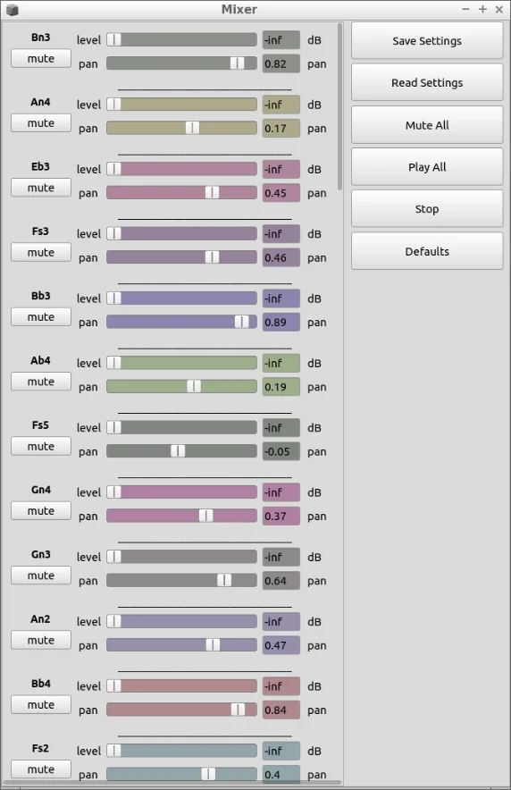
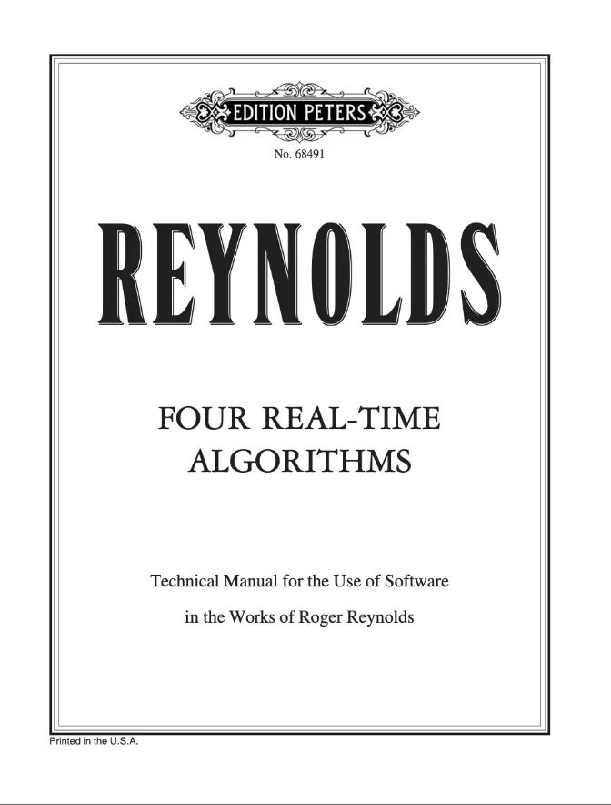
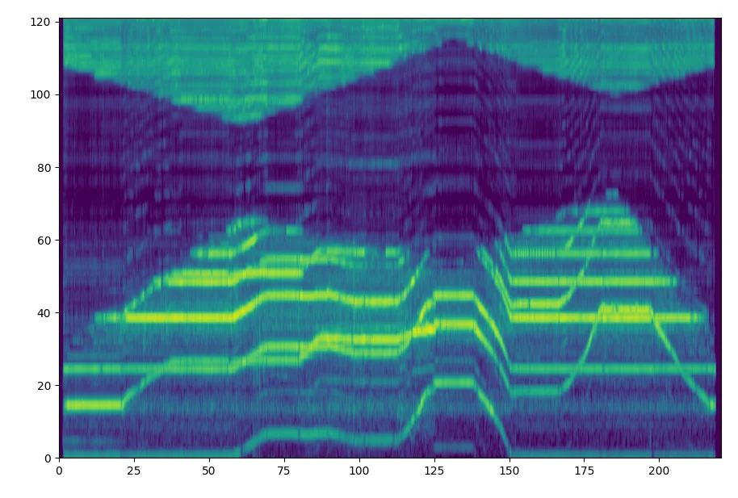
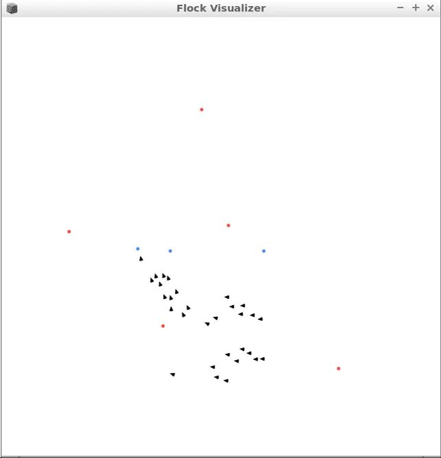
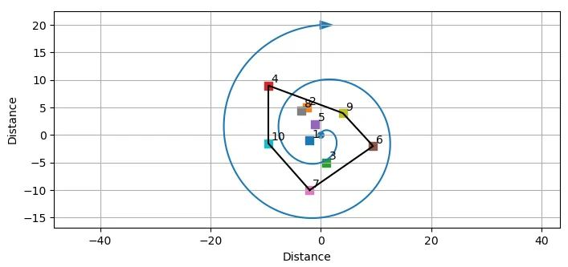

A selection of performances, collaborations, and software built for composers, performers, and researchers — spanning real-time electronics, spatialization, and custom signal-processing tools.

Served as electronics performer and technical coordinator for the American premiere of Chaya Czernowin's Poetica, presented with red fish blue fish.
View program →Years of collaborative development and performance with composer Roger Reynolds, including real-time electronics for Towards Another World (with clarinetist Anthony Burr), ACTIONS (with pianist Eric Huebner), and Persistence (with cellist Peter Ko).

Redesigned the electronics for Lucier's Slices in a new realization with cellist Charles Curtis.

Rewrote Reynolds' Four Real-Time Algorithms from Pure Data into SuperCollider, making the system substantially more dynamic, efficient, and flexible in performance.

A real-time audio visualizer built on the constant-Q transform rather than the FFT, producing a sharper, more musically legible image than typical spectrum visualizers.

An implementation of the boids flocking algorithm for real-time sound control in SuperCollider.
View on GitHub →
A refinement to Distance-Based Amplitude Panning for multichannel spatialization in speaker fields.
Read the Paper →